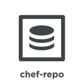

An Overview of Chef
Chef is a powerful automation platform that transforms infrastructure into code. Whether youre operating in the cloud, on-premises, or in a hybrid environment, Chef automates how infrastructure is configured, deployed, and managed across your network, no matter its size.
This diagram shows how you develop, test, and deploy your Chef code.

The workstation is the location from which users interact with Chef. On the workstation users author and test cookbooks using tools such as Test Kitchen and interact with the Chef server using the knife and chef command line tools.
Nodes are the machines—physical, virtual, cloud, and so on—that are under management by Chef. The chef-client is installed on each node and is what performs the automation on that machine.
Use the Chef server as your foundation to create and manage flexible, dynamic infrastructure whether you manage 50 or 500,000 nodes, across multiple datacenters, public and private clouds, and in heterogeneous environments.
The Chef server acts as a hub for configuration data. The Chef server stores cookbooks, the policies that are applied to nodes, and metadata that describes each registered node that is being managed by the chef-client. Nodes use the chef-client to ask the Chef server for configuration details, such as recipes, templates, and file distributions. The chef-client then does as much of the configuration work as possible on the nodes themselves (and not on the Chef server). This scalable approach distributes the configuration effort throughout the organization.
Chef Components
The following diagram shows the relationships between the various elements of Chef, including the nodes, the server, and the workstation. These elements work together to provide the chef-client the information and instruction that it needs so that it can do its job. As you are reviewing the rest of this topic, use the icons in the tables to refer back to this image.
{kind=link}
Chef has the following major components:
{kind=link}
{kind=link}
{kind=link}
{kind=link}
{kind=link}
{kind=link}
Chef management console, chef-client run reporting, high availability configurations, and Chef server replication are available as part of Chef Automate.
The following sections discuss these elements (and their various components) in more detail.
Workstations
A workstation is a computer running the Chef Development Kit (ChefDK) that is used to author cookbooks, interact with the Chef server, and interact with nodes.
The workstation is the location from which most users do most of their work, including:
- Developing and testing cookbooks and recipes
- Testing Chef code
- Keeping the chef-repo synchronized with version source control
- Configuring organizational policy, including defining roles and environments, and ensuring that critical data is stored in data bags
- Interacting with nodes, as (or when) required, such as performing a bootstrap operation
The Chef Development Kit tooling encourages integration and unit testing, and defines workflow around cookbook authoring and policy, but it’s important to note that you know best about how your infrastructure should be put together. Therefore, Chef makes as few decisions on its own as possible. When a decision must be made tools uses a reasonable default setting that can be easily changed. While Chef encourages the use of the tooling packaged in the Chef DK, none of these tools should be seen as a requirement or pre-requisite for being successful using Chef.
Workstation Components and Tools
Some important tools and components of Chef workstations include:
| Component | Description |
|---|---|
The Chef Development Kit is a package that contains everything that is needed to start using Chef:
|
|
ChefDK includes two important command-line tools:
|
|

|
The chef-repo is the repository structure in which cookbooks are authored, tested, and maintained:
The directory structure within the chef-repo varies. Some organizations prefer to keep all of their cookbooks in a single chef-repo, while other organizations prefer to use a chef-repo for every cookbook. |
Use Test Kitchen to automatically test cookbook data across any combination of platforms and test suites:
|
|
Use ChefSpec to simulate the convergence of resources on a node:
|
{kind=link}
{kind=link}
{kind=link}
{kind=link}
{kind=link}
{kind=link}
Cookbooks
A cookbook is the fundamental unit of configuration and policy distribution. A cookbook defines a scenario and contains everything that is required to support that scenario:
- Recipes that specify the resources to use and the order in which they are to be applied
- Attribute values
- File distributions
- Templates
- Extensions to Chef, such as custom resources and libraries
The chef-client uses Ruby as its reference language for creating cookbooks and defining recipes, with an extended DSL for specific resources. A reasonable set of resources are available to the chef-client, enough to support many of the most common infrastructure automation scenarios; however, this DSL can also be extended when additional resources and capabilities are required.
Components
Cookbooks are comprised of the following components:
| Component | Description |
|---|---|
| An attribute can be defined in a cookbook (or a recipe) and then used to override the default settings on a node. When a cookbook is loaded during a chef-client run, these attributes are compared to the attributes that are already present on the node. Attributes that are defined in attribute files are first loaded according to cookbook order. For each cookbook, attributes in the default.rb file are loaded first, and then additional attribute files (if present) are loaded in lexical sort order. When the cookbook attributes take precedence over the default attributes, the chef-client will apply those new settings and values during the chef-client run on the node. | |
A definition is code that is reused across recipes, similar to a compile-time macro. A definition is created using arbitrary code wrapped around built-in chef-client resources—file, execute, template, and so on—by declaring those resources into the definition as if they were declared in a recipe. A definition is then used in one (or more) recipes as if it were a resource. Though a definition behaves like a resource, some key differences exist. A definition:
Use a defintion when repeating patterns exist across resources and/or when a simple, direct approach is desired. There is no limit to the number of resources that may be included in a definition: use as many built-in chef-client resources as necessary. |
|
| Use the cookbook_file resource to transfer files from a sub-directory of COOKBOOK_NAME/files/ to a specified path located on a host that is running the chef-client. The file is selected according to file specificity, which allows different source files to be used based on the hostname, host platform (operating system, distro, or as appropriate), or platform version. Files that are located in the COOKBOOK_NAME/files/default sub-directory may be used on any platform. | |
| A library allows arbitrary Ruby code to be included in a cookbook, either as a way of extending the classes that are built-in to the chef-client—Chef::Recipe, for example—or for implementing entirely new functionality, similar to a mixin in Ruby. A library file is a Ruby file that is located within a cookbook’s /libraries directory. Because a library is built using Ruby, anything that can be done with Ruby can be done in a library file. | |
| Every cookbook requires a small amount of metadata. A file named metadata.rb is located at the top of every cookbook directory structure. The contents of the metadata.rb file provides hints to the Chef server to help ensure that cookbooks are deployed to each node correctly. | |
A recipe is the most fundamental configuration element within the organization. A recipe:
The chef-client will run a recipe only when asked. When the chef-client runs the same recipe more than once, the results will be the same system state each time. When a recipe is run against a system, but nothing has changed on either the system or in the recipe, the chef-client won’t change anything. The Recipe DSL is a Ruby DSL that is primarily used to declare resources from within a recipe. The Recipe DSL also helps ensure that recipes interact with nodes (and node properties) in the desired manner. Most of the methods in the Recipe DSL are used to find a specific parameter and then tell the chef-client what action(s) to take, based on whether that parameter is present on a node. |
|
A resource is a statement of configuration policy that:
Where a resource represents a piece of the system (and its desired state), a provider defines the steps that are needed to bring that piece of the system from its current state into the desired state. Chef has many built-in resources that cover all of the most common actions across all of the most common platforms. You can build your own resources to handle any situation that isn’t covered by a built-in resource. |
|
| A cookbook template is an Embedded Ruby (ERB) template that is used to dynamically generate static text files. Templates may contain Ruby expressions and statements, and are a great way to manage configuration files. Use the template resource to add cookbook templates to recipes; place the corresponding Embedded Ruby (ERB) template file in a cookbook’s /templates directory. | |
| Testing cookbooks improves the quality of those cookbooks by ensuring they are doing what they are supposed to do and that they are authored in a consistent manner. Unit and integration testing validates the recipes in cookbooks. Syntax testing—often called linting—validates the quality of the code itself. The following tools are popular tools used for testing Chef recipes: Test Kitchen, ChefSpec, and Foodcritic. |
{kind=link}
{kind=link}
{kind=link}
{kind=link}
{kind=link}
{kind=link}
{kind=link}
{kind=link}
{kind=link}
{kind=link}
{kind=link}
Nodes
A node is any machine—physical, virtual, cloud, network device, etc.—that is under management by Chef.
Node Types
The types of nodes that can be managed by Chef include, but are not limited to, the following:
{kind=link}
{kind=link}
{kind=link}
{kind=link}
Chef on Nodes
The key components of nodes that are under management by Chef include:
{kind=link}
The Chef Server
The Chef server acts as a hub for configuration data. The Chef server stores cookbooks, the policies that are applied to nodes, and metadata that describes each registered node that is being managed by the chef-client. Nodes use the chef-client to ask the Chef server for configuration details, such as recipes, templates, and file distributions. The chef-client then does as much of the configuration work as possible on the nodes themselves (and not on the Chef server). This scalable approach distributes the configuration effort throughout the organization.
{kind=link}
{kind=link}
{kind=link}
Policy
Policy maps business and operational requirements, process, and workflow to settings and objects stored on the Chef server:
- Roles define server types, such as “web server” or “database server”
- Environments define process, such as “dev”, “staging”, or “production”
- Certain types of data—passwords, user account data, and other sensitive items—can be placed in data bags, which are located in a secure sub-area on the Chef server that can only be accessed by nodes that authenticate to the Chef server with the correct SSL certificates
- The cookbooks (and cookbook versions) in which organization-specific configuration policies are maintained
Some important aspects of policy include:
{kind=link}
{kind=link}
{kind=link}
{kind=link}
Conclusion
Chef is a thin DSL (domain-specific language) built on top of Ruby. This approach allows Chef to provide just enough abstraction to make reasoning about your infrastructure easy. Chef includes a built-in taxonomy of all the basic resources one might configure on a system, plus a defined mechanism to extend that taxonomy using the full power of the Ruby language. Ruby was chosen because it provides the flexibility to use both the simple built-in taxonomy, as well as being able to handle any customization path your organization requires.